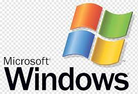

Microsoft Windows operating-system
Microsoft Windows is a product line of proprietary graphical operating systems developed and marketed by Microsoft. It is grouped into families and sub-families that cater to particular sectors of the computing industry -- Windows (unqualified) for a consumer or corporate workstation, Windows Server for a server and Windows IoT for an embedded system. Defunct families include Windows 9x, Windows Mobile, Windows Phone, and Windows Embedded Compact.

What is special about Windows OS?
Basically, windows provide a Graphical User Interface, multitasking, and support for many peripheral devices. Windows have Microsoft Office which became the most common and popular office suite. It has many features like a file explorer, command prompt, task manager, AI-powered bot called Cortana, etc.
Versions of Windows Operating System
- Windows 1
- Windows 2
- Windows 3
- Windows 3.1
- Windows 95
- Windows 98
- Windows ME
- Windows 2000
- Windows XP
- Windows Vista
- Windows 7
- Windows 8
- Windows 8.1
- Windows 10
- Windows 11
Why do people choose Windows OS?
The primary reason behind its global popularity is its very user-friendly interface. Windows operating system also provides multitasking capabilities, virtual memory management, etc. Till date, Microsoft has launched many versions of its Windows operating system.
HOME Page
macOS
Linux